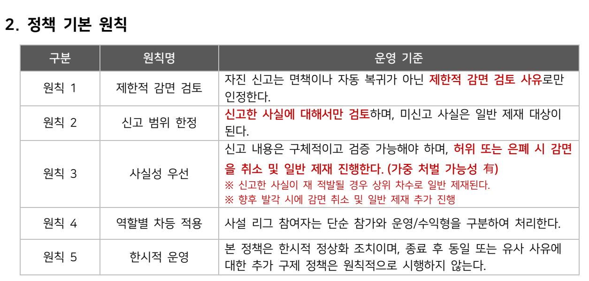
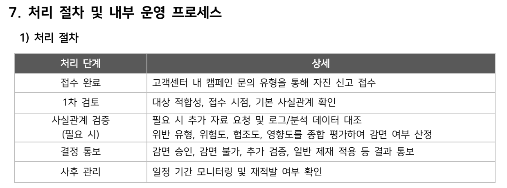

Business / Service PM
서비스 운영과 사업 기획
운영 리스크에 대응할 자진신고 캠페인을 기획하고 유관부서와 추진 방향을 협의했습니다. 별도로 테일즈런너 21주년 오프라인 행사 초안을 맡았습니다.
Service Operation
자진신고 캠페인
운영 리스크에 대응할 캠페인 기획과 유관부서 협의
캠페인이 필요했던 맥락
리그 운영을 앞두고 비정상 이용의 사실관계와 사설 리그 참여 경위를 확인할 필요가 있었습니다. 자진신고를 접수한 뒤 무엇을 검증하고 어떤 기준으로 처리할지 정책안으로 정리했습니다.
정책 초안은 자진신고를 자동 면책이나 자동 복귀로 보지 않았습니다. 신고된 사실과 제출 자료를 검증한 뒤 제한적으로 감면을 검토하는 방식입니다.
Risk → Response
대응 방향을 추진안으로 정리
신고 대상과 접수 항목, 감면 검토 기준, 후속 처리 절차를 나누어 유관부서가 검토할 정책안을 마련했습니다.
- 기획
자진신고 캠페인 추진안 마련
위반 유형과 행위 기간, 이용 방식, 이익 여부, 증빙 자료를 접수 항목으로 정리했습니다. 사설 리그 참여 건은 참여 경위를 추가로 확인하도록 구성했습니다.
- 협의
유관부서와 추진 방향 검토
신고 범위와 검증 기준, 단순 참가와 운영·수익형 참여의 구분을 정책안에 담고 유관부서와 추진 방향을 협의했습니다.
- 실행 준비
협의한 방향을 추진할 기반 마련
접수, 1차 검토, 필요 시 사실관계 검증, 결정 통보, 사후 관리로 이어지는 처리안을 정리했습니다. 실제 신고 접수와 심의 결과를 직접 집행한 성과로 확대하지 않습니다.
정책 초안 · ver0.1
검토 기준과 처리 절차를 문서로
캠페인에서 접수할 정보와 감면을 검토할 기준을 정리한 정책 초안입니다.
최종 공지나 집행 결과가 아닌 기획 산출물로 제시합니다.
- 신고 범위
- 신고한 사실에 한해 검토하고, 제출 정보의 구체성과 검증 가능성을 확인합니다.
- 역할과 행위
- 사설 리그의 단순 참가와 운영·수익형 참여를 구분하고, 반복성·조직성·영리성을 검토 요소로 둡니다.
- 후속 처리
- 자료가 부족하면 추가 확인을 거치고, 검토 결과 통보 이후에도 재적발 여부를 확인하는 절차를 포함했습니다.


정책 초안의 기본 원칙과 처리 단계만 발췌했습니다. 세부 감면 수치와 일정은 최종 정책으로 제시하지 않습니다.
재직 중 기여 범위
캠페인 추진안과 실행 준비까지를 이 사례의 기여로 정리했습니다. 최종 결과는 퇴사 약 한 달 뒤 확인했으며, 직접 관리한 서비스 성과로 기재하지 않았습니다.
자진신고 캠페인을 사면이나 제재 면제로 표현하지 않습니다.
운영 리스크 대응과 함께, 서비스 기념일에 유저와 만날 오프라인 행사 초안도 기획했습니다.
Business Planning · Supporting Case
21주년 오프라인 행사 초안
장기 서비스의 기념일을 고려한 초기 기획
기념일과 오프라인 경험
테일즈런너 21주년을 맥락으로 행사 초안을 기획했습니다. 기념일의 의미와 유저가 오프라인에서 만나는 경험을 고려하는 초기 제안 단계였습니다.
담당 범위
- 서비스 맥락
- 테일즈런너 21주년
- 기획 산출물
- 오프라인 행사 초안
담당 범위는 초안 기획입니다. 최종 행사 개최와 현장 운영 성과를 포함하지 않습니다.
서비스 운영과 사업 기획
운영 대응과 다음 기획을 함께
테일즈런너에서는 운영 이슈에 대한 대응안을 준비하는 일과 기념일 행사를 구상하는 일을 함께 맡았습니다. 개발 일정과 업데이트 외에도 운영 정책에 관한 협의와 사업 기획이 업무 범위에 들어왔습니다. 두 업무 모두 직접 맡은 기획 범위와 이후 실행을 구분해 정리했습니다.